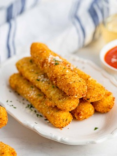

Mozzarella Mandness
Mozzerella sticks for beginners.
A recipe by Luis.
- String cheese
- Flour
- Eggs
- Bread crumbs
- Dip the string cheese into the flour, then the eggs, and finally the bread crumbs.
- Fill a pot a quarter of the way with vegetable oil.
- Put the string cheese into the oil and deep fry until golden brown.
- Put cheese of your choice on top of the mozzerella sticks.
- Finally, use a blow torch to melt the cheese of your choice.
If you would like, you could add pepperoni and/or salami to the cheese sticks.
If you would like, add hot sauce and/or spicy seasonings of your choice to add a little kick to it.
That's how you make mozzerella sticks for beginners.
